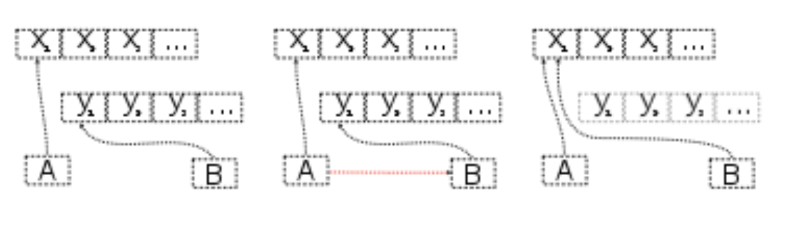
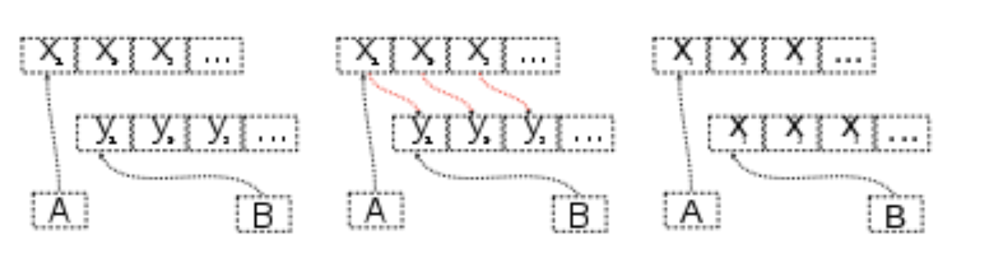

6. Data Structures¶
Note
This Chapter Data Structures is for beginner. If you have some Python programming experience, you may skip this chapter.
6.1. List¶
list is one of data sctructures which is heavily using in my daily work.
6.1.1. Create list¶
Create empty list
The empty list is used to initialize a list.
:: Python Code:
my_list = [] type(my_list)
:: Ouput:
list
I applied the empty list to initialize my silhouette score list when I try to find the
optimal number of the clusters.
:: Example:
min_cluster = 3 max_cluster =8 # silhouette_score scores = [] for i in range(min_cluster, max_cluster): score = np.round(np.random.random_sample(),2) scores.append(score) print(scores)
:: Ouput:
[0.16, 0.2, 0.3, 0.87, 0.59]
6.1.2. Unpack list¶
:: Example:
num = [1,2,3,4,5,6,7,8,9,10] print(*num)
:: Ouput:
1 2 3 4 5 6 7 8 9 10
6.1.3. Methods of list objects¶
Methods of list objects:
Name |
Description |
|---|---|
list. |
Add an item to the end of the list |
list. |
Extend the list by appending all |
list. |
Insert an item at a given position |
list. |
Remove the first item |
list. |
Remove the item at given position |
list. |
Remove all items from the list |
list. |
Return zero-based index in the list |
list. |
Return the number of times x |
list. |
Sort the items of the list |
list. |
Reverse the elements of the list |
list. |
Return a shallow copy 1 of list |
6.1.4. list.append(x) vs. list.extend(iterable)¶
The difference of list. append(x) vs. list. extend(iterable) is easy to understand
from the example below:
:: Example:
list1 = ['A','B','C'] list2 = ['D','E','F'] list1.append(list2) print(list1)
:: Ouput:
['A', 'B', 'C', ['D', 'E', 'F']]
:: Example:
list1 = ['A','B','C'] list2 = ['D','E','F'] list1.extend(list2) print(list1)
:: Ouput:
['A', 'B', 'C', 'D', 'E', 'F']
Footnotes
- 1
Shallow Copy vs Deep Copy Reference: https://stackoverflow.com/posts/184780/revisions
Shallow copy:
The variables A and B refer to different areas of memory, when B is assigned to A the two variables refer to the same area of memory. Later modifications to the contents of either are instantly reflected in the contents of other, as they share contents.
Deep Copy:
The variables A and B refer to different areas of memory, when B is assigned to A the values in the memory area which A points to are copied into the memory area to which B points. Later modifications to the contents of either remain unique to A or B; the contents are not shared.
6.2. Tuple¶
A tuple is an assortment of data, separated by commas, which makes it similar to the Python list, but a tuple is fundamentally different in that a tuple is “immutable.” This means that it cannot be changed, modified, or manipulated.
6.3. Dictionary¶
dict is one of another data sctructures which is heavily using in my daily work. I heavily applied the dict in my PyAudit package, more details can be found at PyAudit.
6.3.1. Create dict from lists¶
:: Example:
col_names = ['name','Age', 'Sex', 'Car'] col_values = ['Michael', '30', 'Male', ['Honda','Tesla']] # d = {key: value for key, value in zip(col_names, col_values)} print(d) # import pandas as pd df = pd.DataFrame(d) print(df)
:: Ouput:
{'name': 'Michael', 'Age': '30', 'Sex': 'Male', 'Car': ['Honda', 'Tesla']} name Age Sex Car 0 Michael 30 Male Honda 1 Michael 30 Male Tesla
6.3.2. dict.get()¶
When get() is called, Python checks if the specified key exists in the dict. If it does, then get() returns the value of that key. If the key does not exist, then get() returns the value specified in the second argument to get(). A good application of get() can be found at Update Keys in Dict.
:: Example:
data1 = d.get("name", "best") data2 = d.get("names", "George") print(data1) # Michael print(data2) # George
:: Ouput:
Michael George
6.3.3. Looping Techniques¶
:: Example:
print([(key, val) for key, val in d.items()])
:: Ouput:
[('name', 'Michael'), ('Age', '30'), ('Sex', 'Male'), ('Car', ['Honda', 'Tesla'])]
6.3.4. Update Values in Dict¶
Replace values in dict
:: Example:replace = {'Car': ['Tesla S', 'Tesla X']} print(d) d.update(replace) print(d)
:: Ouput:{'name': 'Michael', 'Age': '30', 'Sex': 'Male', 'Car': ['Honda', 'Tesla']} {'name': 'Michael', 'Age': '30', 'Sex': 'Male', 'Car': ['Tesla S', 'Tesla X']}
Add key and values in dict
:: Example:# add key and values in dict added = {'Kid': ['Tom', 'Jim']} print(d) d.update(added) print(d)
:: Ouput:{'name': 'Michael', 'Age': '30', 'Sex': 'Male', 'Car': ['Tesla S', 'Tesla X']} {'name': 'Michael', 'Age': '30', 'Sex': 'Male', 'Car': ['Tesla S', 'Tesla X'], 'Kid': ['Tom', 'Jim']}
6.3.5. Update Keys in Dict¶
:: Example:
# update keys in dict mapping = {'Car': 'Cars', 'Kid': 'Kids'} # print({mapping.get(key, key): val for key, val in d.items()})
:: Ouput:
{'name': 'Michael', 'Age': '30', 'Sex': 'Male', 'Car': ['Tesla S', 'Tesla X'], 'Kid': ['Tom', 'Jim']} {'name': 'Michael', 'Age': '30', 'Sex': 'Male', 'Cars': ['Tesla S', 'Tesla X'], 'Kids': ['Tom', 'Jim']}
6.4. One line if-else statement¶
6.4.1. With filter¶
::syntax:
[ RESUT for x in seq if COND ]
:: Python Code:
num = [1,2,3,4,5,6,7,8,9,10] [x for x in num if x%2 ==0]
:: Ouput:
[2, 4, 6, 8, 10]
6.4.2. Without filter¶
::syntax:
[ RESUT1 if COND1 else RESUT2 if COND2 else RESUT3 for x in seq]
:: Python Code:
num = [1,2,3,4,5,6,7,8,9,10] ['Low' if 1<= x <=3 else 'Median' if 3<x<8 else 'High' for x in num]
:: Ouput:
['Low', 'Low', 'Low', 'Median', 'Median', 'Median', 'Median', 'High', 'High', 'High']